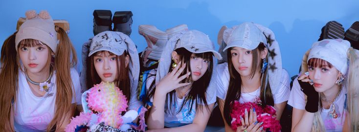
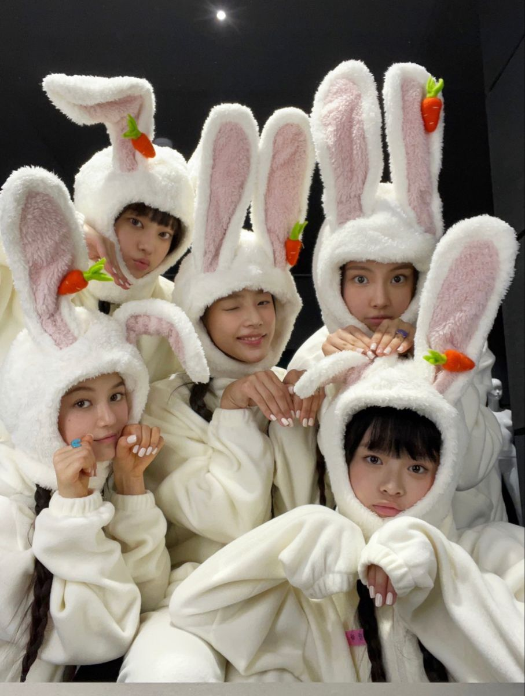

NewJeans (뉴진스), also known as NJZ (엔제이지), is a South Korean girl group consisting of five talented members:
The group debuted under ADOR, a subsidiary of HYBE Labels, and quickly became one of the most loved K-pop groups around the world.
💿 Their journey began on July 22, 2022, with the surprise release of their debut single "Attention", followed by their official debut EP, New Jeans, on August 1, 2022. Soon after, they released the fan-favorite songs "Hype Boy" and "Cookie", which helped them gain global popularity.
🌟 In 2023, NewJeans reached new heights with their second EP, Get Up. The album topped charts worldwide, including the US Billboard 200, and sold over one million copies in South Korea. Their hit song "Super Shy" became one of their most successful tracks, charming fans with its catchy melody and fun choreography.
🏆 Since their debut, NewJeans has won numerous awards and earned recognition from major organizations. They have been featured on prestigious lists such as Time's Next Generation Leaders and Forbes Korea Power Celebrity 40. Their influence continues to grow, making them one of the most successful K-pop groups of their generation.໒꒰ྀི ˶• ༝ •˶ ྀི১
What makes NewJeans so special is their fresh and natural concept. Instead of focusing on dramatic or futuristic themes, they embrace a youthful and nostalgic atmosphere inspired by the late 1990s and early 2000s. ✨
🎧 Their music blends pop, R&B, and dance sounds, creating songs that feel both modern and timeless. Their music videos often feature themes of friendship, self-expression, growing up, and enjoying life's little moments. 🌼
📸 Their aesthetic is soft, colorful, and carefree, filled with vintage fashion, playful visuals, and a sense of youthful freedom. This unique style has helped NewJeans stand out in the K-pop industry and capture the hearts of fans all over the world. 💖🐰🦋🌻🐱🐻

💖 The official fandom name of NewJeans is Bunnies. The name was announced in 2022 and is inspired by rabbits, which are an important part of the group's branding and image. The fandom name reflects the close connection between the members and their fans.
📱✨ Bunnies play an important role in supporting NewJeans. Fans help promote the group's music by streaming songs, purchasing albums, voting in music awards, and sharing content on social media. Many fans also create fan art, edits, and videos dedicated to the group.
🌍 The fandom is known for being highly active and international. Bunnies can be found all around the world, including Asia, Europe, North America, and many other regions. This global support helped NewJeans gain popularity both in South Korea and internationally.
🎶 Many fans are drawn to NewJeans because of their unique music style. The group combines pop, R&B, and Y2K-inspired sounds, creating a fresh and recognizable identity that appeals to a wide audience.
💙🐰 Even during challenging periods, Bunnies have remained supportive and engaged. The fandom continues to follow updates about the members, celebrate their achievements, and share their appreciation for the group's music and impact.
🎧 Listen to NewJeans on Spotify
🌐 Official Website: newjeans.kr
🇯🇵 Japan Website: newjeans.jp
📸 Instagram: @newjeans_official
🎵 TikTok: @newjeans_official
▶️ YouTube: NewJeans Official
🐦 X (Twitter): @NewJeans_ADOR